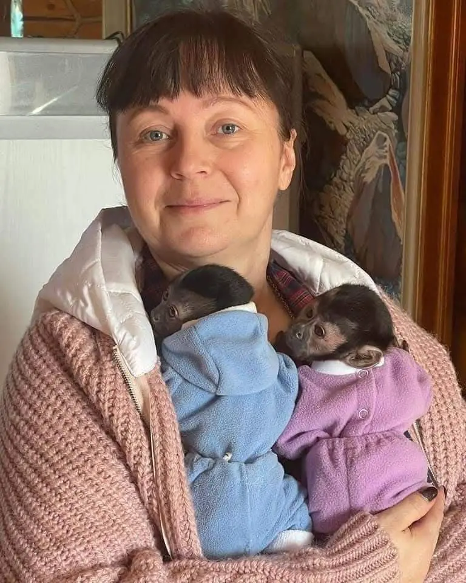
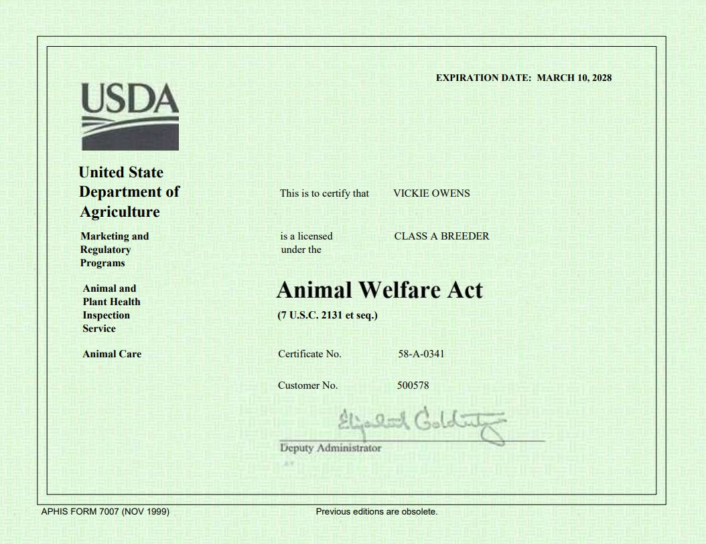
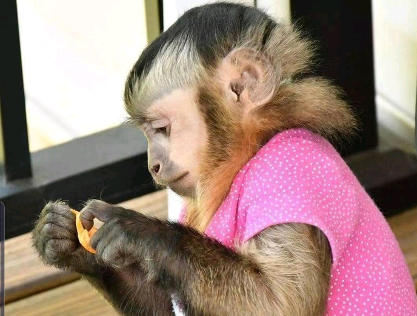
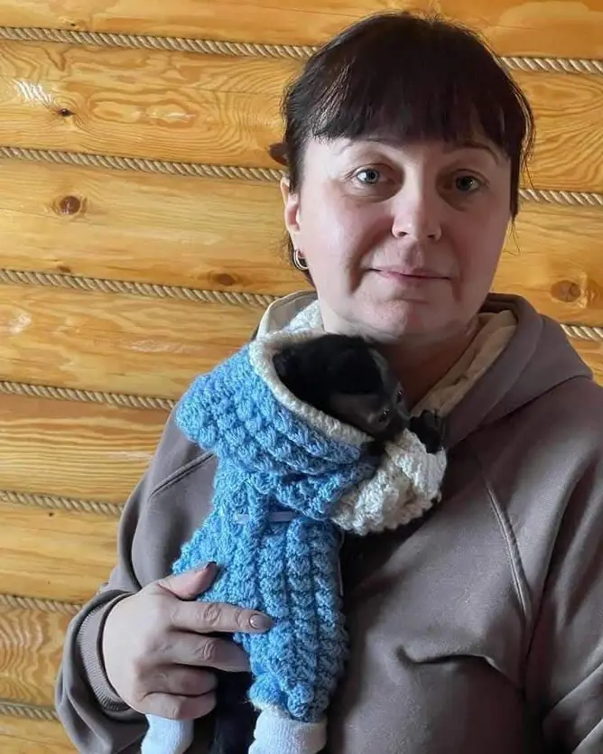
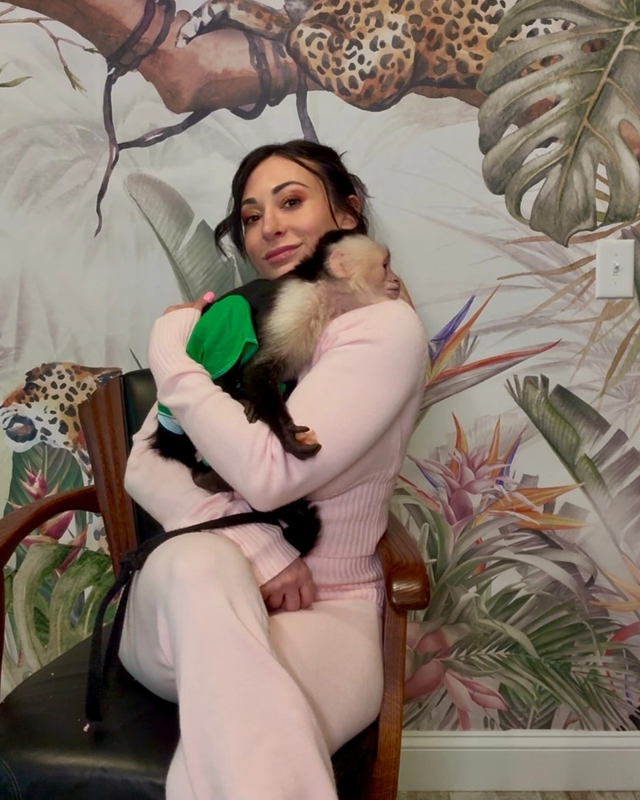

Dedicated to breeding and producing healthy, well-socialized capuchin monkey for sale. Providing loving homes for these special creatures while educating owners on proper care.
My name is Vickie Owens an animal lover since I was a child., we've spent over 15 years perfecting our breeding practices to ensure the health, happiness, and proper socialization of our capuchin monkeys. Our facility is designed to provide a nurturing environment that prepares our monkeys for life as beloved companions.
Every monkey in our care receives individualized attention, proper nutrition, regular veterinary care, and early socialization to ensure they develop into well-adjusted companions. We take pride in matching the right monkey with the right family.
Our focus is improving the overall quality of our capuchin monkeys. We proudly follow the USDA Breeding Standards. Our certifications demonstrate our cleanliness and the integrity of our operations.
Fully compliant with all federal regulations
Complete medical history provided
Socialized from birth for better bonding
Guidance and assistance for the life of your monkey

Years of Experience
15+
Happy Homes
200+
With over 15 years of experience in breeding capuchin monkeys, we provide the highest standard of care and ethical breeding practices.
Breeding capuchin monkeys isn’t just what we do, it’s who we are. Every life that enters our care is the result of years of dedication, knowledge, and an unshakable passion for these remarkable creatures.
True excellence in capuchin monkey breeding lies at the crossroads of dedication, knowledge, and an unshakable passion.
Companion of rare beauty, raised under the highest standards of ethics, care, and expertise, reflections of a legacy built on passion.
Hand reared in an environment of quiet luxury, where they receive individualized bonding sessions, premium nutrition, and early enrichment activities that nurture their intelligence and affectionate nature.
Every heartbeat entrusted to us is met with a commitment to excellence and a promise that no detail is ever overlooked.
We aren’t just breeders, we are guardians of a rare treasure, a living connection between nature and heart.
We meticulously select each breeding pair based on health, genetic strength, and temperament, ensuring that every baby born is healthy.
Every capuchin monkey that grows in our care carries our promise: excellence, compassion, and a life filled with trust and wonder.




We're dedicated to ethical breeding practices and providing the highest standard of care for our capuchin monkeys. Our certifications demonstrate our cleanliness and the integrity of our operations.
Our capuchins are bred with the utmost care for their physical and emotional wellbeing. We maintain spacious, enriched environments and follow all USDA guidelines.
Each monkey receives regular veterinary check-ups, vaccinations, and preventative care. We provide detailed medical records and a health guarantee with every Finger Monkey For Sale adoption.
With over 15 years of experience, our capuchins are hand-raised and socialized from birth, ensuring they develop strong bonds with humans and adapt well to family environments.
Our commitment doesn't end with adoption. We offer ongoing support, advice, and resources throughout your capuchin's life.